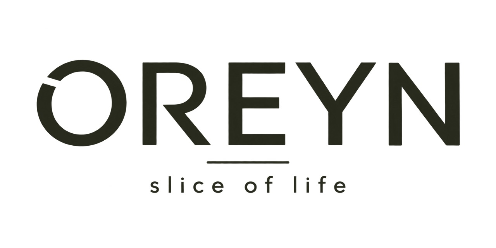
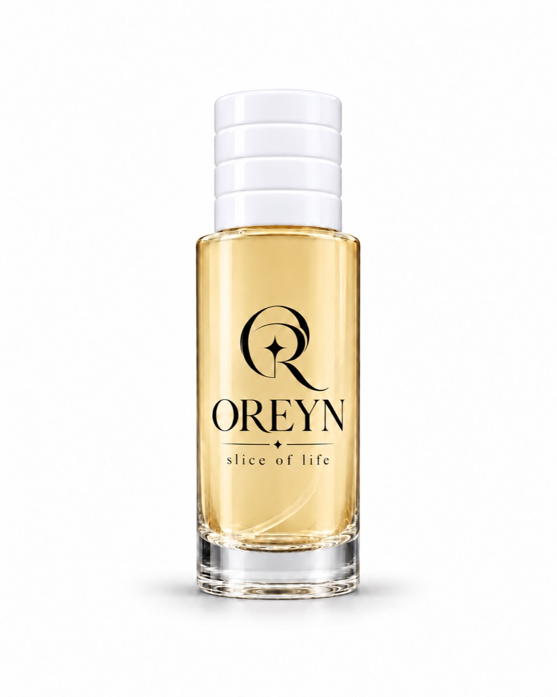

01 / OUD
Oud
العودSize & price to confirm


A little more you. In every drop.
Find the fragrance that feels like you.
Find the fragrance that feels like you.
Three fragrances. One signature box.
Start with the feeling you want to carry. Solar Drift is bright and open, After Hours is textured and woody, and Soft Static is quiet and close. Our scent finder offers a starting point; the OREYN Trio lets you explore all three.
Eau de parfum describes a fragrance concentration. How a scent feels and develops also depends on its composition, your skin, and your surroundings. Explore the opening, heart, and base notes on each scent page.
Yes. Our compositions are organized by mood and scent family, without gender labels. Follow your own preferences.
Try one scent at a time, and give it room to unfold. Notice the first impression, return to it later, and see how it fits into your day. Follow the product's use instructions and avoid irritated skin.
This is the Oreyn concept experience. You can explore fragrances, save favorites, build a bag, and preview an order. Payments, shipping, and live email subscriptions are not enabled yet.